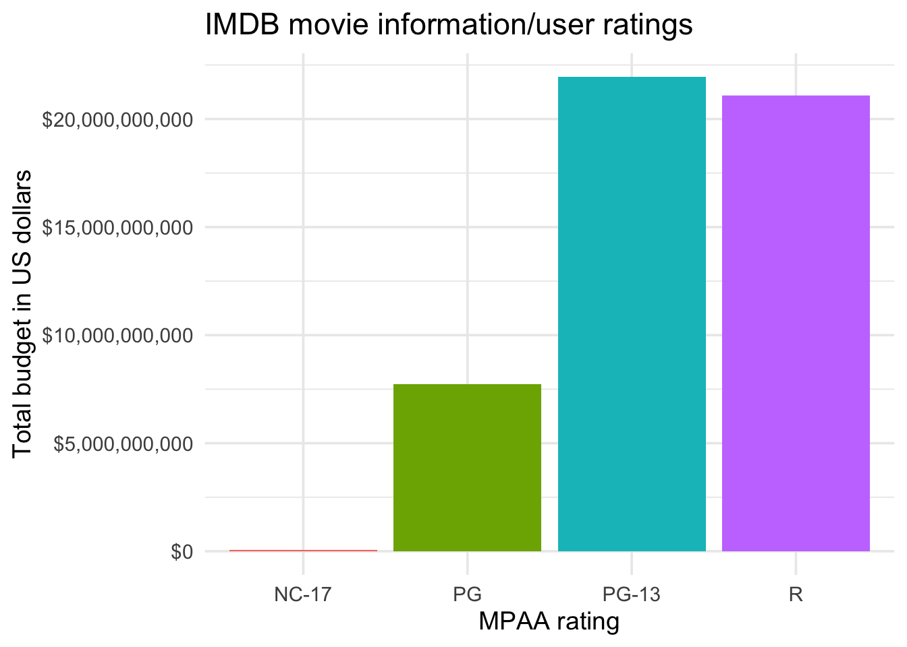
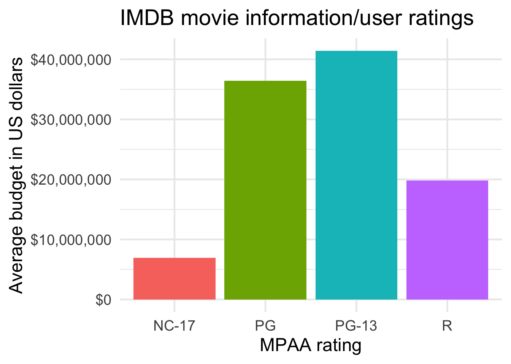
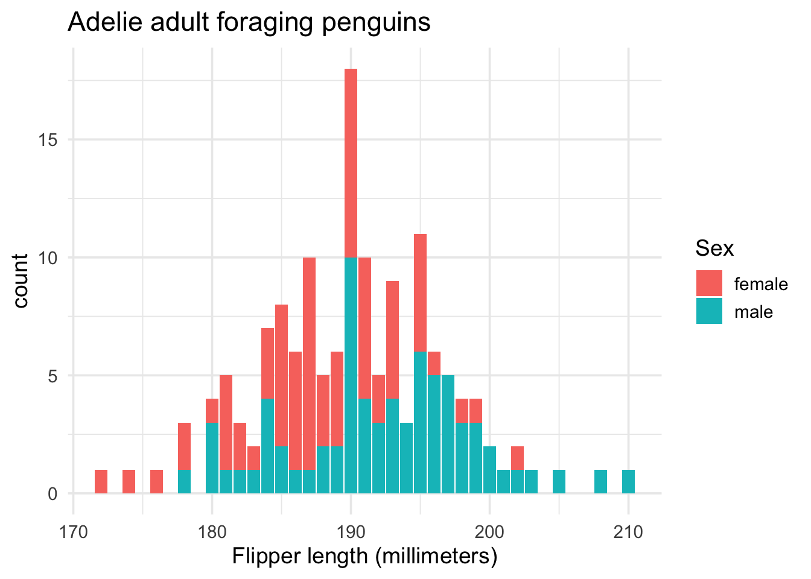

install.packages("ggplot2movies")
library(ggplot2movies)
library(ggplot2)COMPARING AMOUNTS
Comparing Counts and Summaries with ggplot2 (and friends!)
GROUPED COLUMN GRAPHS
Note
When would I use this graph?
Grouped column graphs display calculated ‘summary’ values for a numerical variable across the levels of a second categorical variable. Color is used to make comparisons and distinguish between groups (or levels) of the categorical variable.
In ggplot2, we can create grouped column graphs with geom_co().
PACKAGES:
Install packages.
DATA:
Description of data
movies_grp_col <- ggplot2movies::movies |>
filter(!is.na(budget) & mpaa != "") |>
select(budget, mpaa)
glimpse(movies_grp_col)Rows: 1,813
Columns: 2
$ budget <int> 23000000, 16000000, 1100000, 37000000, 85000000, 42000000, 4000…
$ mpaa <chr> "PG-13", "PG-13", "R", "PG-13", "R", "R", "PG", "PG-13", "R", "…CODE:
Create the labels
Map mpaa to x and budget to y
Inside geom_col(), map mpaa to fill and remove the legend with show.legend = FALSE
Format the y axis with scale_y_continuous() by setting labels to scales::dollar
labs_col <- labs(
title = "IMDB movie information/user ratings",
x = "MPAA rating",
y = "Total budget in US dollars")
ggp2_col <- ggplot(data = movies_grp_col,
aes(x = mpaa,
y = budget)) +
geom_col(aes(fill = mpaa),
show.legend = FALSE) +
scale_y_continuous(labels = scales::dollar)
ggp2_col +
labs_colGRAPH:

SUMMARY:
If we pass a categorical variable to the x (like mpaa) and a continuous variable to y (like budget), geom_col() will calculate the sum() of y by levels of x
ggplot2movies::movies |>
filter(!is.na(budget) & mpaa != "") |>
select(budget, mpaa) |>
group_by(mpaa) |>
summarise(tot_bud = sum(budget, na.rm = TRUE),
tot_bud = scales::dollar(tot_bud)) |>
ungroup() |>
select(MPAA = mpaa,
`Total budget` = tot_bud)We can see the underlying summary of budget using dplyr’s group_by() and summarise() functions.
| MPAA | Total budget |
|---|---|
| NC-17 | $48,637,000 |
| PG | $7,728,300,000 |
| PG-13 | $21,955,784,000 |
| R | $21,078,510,606 |
SUMMARIZED COLUMN GRAPHS
Note
When would I use this graph?
geom_col() allows us to display any summary statistic we can calculate for a numerical variable.
PACKAGES:
For example, the code below summarizes the average budget grouped by levels of mpaa rating in the movies dataset.
install.packages("ggplot2movies")
library(ggplot2movies)
library(ggplot2)DATA:
Description of data
movies_sum_col <- ggplot2movies::movies |>
filter(!is.na(budget) & mpaa != "") |>
select(budget, mpaa) |>
group_by(mpaa) |>
summarise(avg_budget = mean(budget, na.rm = TRUE)) |>
ungroup()
glimpse(movies_sum_col)Rows: 4
Columns: 2
$ mpaa <chr> "NC-17", "PG", "PG-13", "R"
$ avg_budget <dbl> 6948143, 36454245, 41426008, 19810630CODE:
Create the labels
Map mpaa to the x and avg_budget to the y
Map mpaa to fill inside the aes() of geom_col() and remove the legend with show.lengend = FALSE
Format the y axis with scale_y_continuous() by setting labels to scales::dollar
labs_col <- labs(
title = "IMDB movie information/user ratings",
x = "MPAA rating",
y = "Average budget in US dollars")
ggp2_col <- ggplot(data = movies_sum_col,
aes(x = mpaa,
y = avg_budget)) +
geom_col(aes(fill = mpaa),
show.legend = FALSE) +
scale_y_continuous(labels = scales::dollar)
ggp2_col +
labs_colGRAPH:

OVERLAPPING BAR GRAPHS
Note
When would I use this graph?
We can also use bars to look at numeric and categorical variables using geom_bar() by setting fill argument
This results in bars differentiated by color and ‘stacked’ on top of each other.
PACKAGES:
Install packages.
install.packages("palmerpenguins")
library(palmerpenguins)
library(ggplot2)DATA:
Remove missing sex from penguins and filter to only "Adelie" penguins.
penguins_ovrlp <- filter(penguins,
!is.na(sex) & species == "Adelie")
glimpse(penguins_ovrlp)Rows: 146
Columns: 8
$ species <fct> Adelie, Adelie, Adelie, Adelie, Adelie, Adelie, Adel…
$ island <fct> Torgersen, Torgersen, Torgersen, Torgersen, Torgerse…
$ bill_length_mm <dbl> 39.1, 39.5, 40.3, 36.7, 39.3, 38.9, 39.2, 41.1, 38.6…
$ bill_depth_mm <dbl> 18.7, 17.4, 18.0, 19.3, 20.6, 17.8, 19.6, 17.6, 21.2…
$ flipper_length_mm <int> 181, 186, 195, 193, 190, 181, 195, 182, 191, 198, 18…
$ body_mass_g <int> 3750, 3800, 3250, 3450, 3650, 3625, 4675, 3200, 3800…
$ sex <fct> male, female, female, female, male, female, male, fe…
$ year <int> 2007, 2007, 2007, 2007, 2007, 2007, 2007, 2007, 2007…CODE:
Create the labels
Map flipper_length_mm to the x and sex to fill
Add the geom_bar() layer
labs_bar_ovrlp <- labs(
title = "Adelie adult foraging penguins",
x = "Flipper length (millimeters)",
fill = "Sex")
ggp2_bar_ovrlp <- ggplot(data = penguins_ovrlp,
aes(x = flipper_length_mm, fill = sex)) +
geom_bar()
ggp2_bar_ovrlp +
labs_bar_ovrlpGRAPH:
